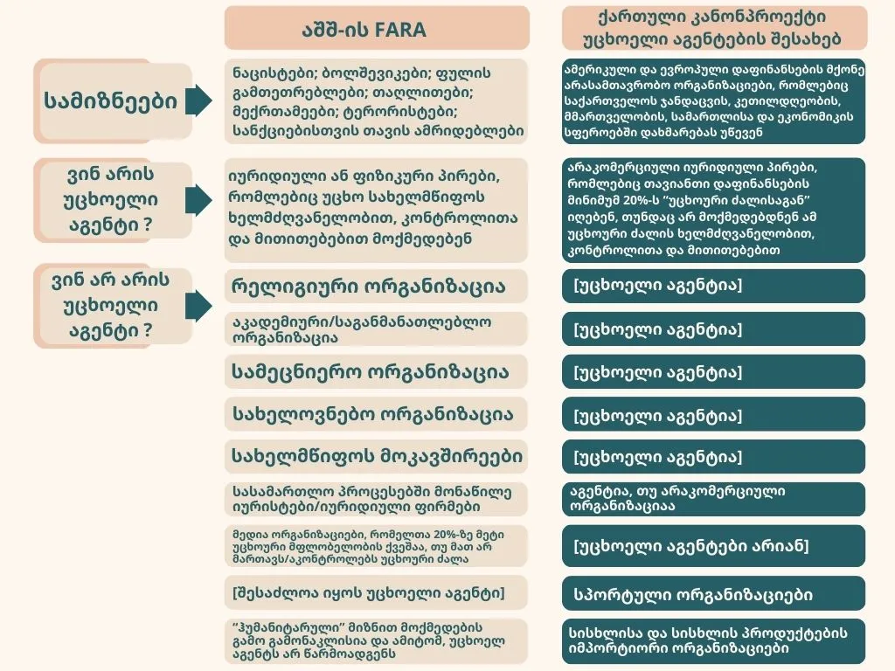

US FARA vs. Georgian Foreign Agents Law: Three Major Differences

Who is Your Enemy?
ამის საპირისპიროდ, „უცხოელი აგენტების“ შესახებ ქართული კანონის მხარდამჭერებმა – „ქართული ოცნების“ ლიდერებმა – საქართველოში უცხოელი აგენტების წყაროდ ამერიკული და ევროპული დაფინანსება დაასახელეს, რომელიც ქართული არასამთავრობო ორგანიზაციებისკენაა მიმართული. „ქართული ოცნების“ პოლიტიკოსები გამუდმებით საუბრობენ „მეორე ფრონტზე“ და აშშ-ისა და ევროკავშირის მიერ „რევოლუციის“ დაფინანსებაზე. ერთი სიტყვით, „ქართულმა ოცნებამ“ შეერთებული შტატები და ევროკავშირი იმავე კატეგორიაში მოაქცია, რომელშიც 1938 წელს აშშ-მა ნაცისტური გერმანია მოათავსა. და ეს ხდება იმ ფონზე, როდესაც აშშ-მა და ევროკავშირმა საქართველოს დაახლოებით 30 წლის მანძილზე მილიარდობით დოლარისა და ევროს დახმარება გაუწიეს და როცა „ქართული ოცნება“ აცხადებს, რომ მას ევროკავშირში გაწევრიანება სურს, ხოლო ამერიკის შეერთებულ შტატებს პარტნიორს უწოდებს. რეალურად კი ამ კანონით (ისევე როგორც მისი ყოველდღიური რიტორიკით) „ქართული ოცნება“ აშშ-ს და ევროკავშირს მტრულ ძალებად განიხილავს. „უცხოელი აგენტების“ შესახებ კანონის მხარდაჭერისას, „ქართული ოცნება“ არასდროს ახსენებს რუსეთს – ქვეყანას, რომელსაც ქართველების დიდი უმრავლესობა საქართველოს მთავარ მტრად მიიჩნევს და რომელიც ცდილობს, ქართულ პოლიტიკაზე გავლენა მოახდინოს და ქართული დემოკრატია გაანადგუროს.
FARA-ს, როგორც ანტინაცისტური, ანტიბოლშევიკური კანონის წარმოშობა მხოლოდ ისტორია არ არის. აშშ-ის იუსტიციის სამინისტრომ FARA-ს ფარგლებში სისხლისსამართლებრივი დევნა დაიწყო მხოლოდ იმ პირებისა და ორგანიზაციების წინააღმდეგ, რომლებიც დაკავშირებული იყვნენ ფულის გათეთრებასთან, თაღლითობასთან, სანქციების თავიდან აცილებასთან, საარჩევნო კამპანიის დროს უკანონო შემოწირულობებთან, მოსყიდვასთან, ტერორიზმთან და მტრულად განწყობილ უცხოურ ძალებთან. ამის საპირისპიროდ, „ქართულმა ოცნებამ“ იერიში მიიტანა ქართულ არასამთვრობო ორგანიზაციებზე, რომლებიც კანონიერად მუშაობენ და დაფინანსებას აშშ-დან და ევროკავშირის წევრი ქვეყნებიდან იღებენ, რათა მოსახლეობის საკეთილდღეოდ ჯანმრთელობის, სოციალური უზრუნველყოფის, სამოქალაქო უფლებების, განათლებისა და სხვა სფეროებში სხვადასხვა აქტივობა განახორციელონ. არც ერთი აშშ-ის ან ევროკავშირის მიერ დაფინანსებული ორგანიზაცია, რომლებიც „ქართულმა ოცნებამ“ ამოიღო მიზანში, კანონდარღვევასთან არ ასოცირდება. რაც შეეხება იმ პირებსა და ორგანიზაციებს, რომელთა მიმართაც აშშ-ის იუსტიციის სამინისტრო FARA-ს ფარგლებში სამართლებრივ დევნას იწყებს, ყველა მათგანი სერიოზულ სისხლის სამართლის დანაშაულშია მხილებული.
Who is a Foreign Agent?
ქართული კანონი არ შეიცავს მოთხოვნას, რომ ადგილობრივი გრანტის მიმღები კონტროლდებოდეს უცხოური ძალის მიერ ან მოქმედებდეს უცხოური ძალის მითითებით ან მისი სახელით, მაშინ როცა ყველა ამ ელემენტს ამერიკული კანონი ითვალისწინებს. ქართული კანონპროექტი უბრალოდ მოითხოვს, რომ ქართული არაკომერციული ორგანიზაცია, რომელმაც თანხები უცხოური ძალისგან მიიღო, უცხოურ აგენტად ჩაითვალოს.
ეს ნიშნავს, რომ საქართველოს კანონმდებლობას ბევრად უფრო ფართო დაფარვა აქვს, ვიდრე ამერიკულ კანონს. ყველამ, ვისაც თუნდაც მცირე ინფორმაცია მაინც აქვს იმის თაობაზე, თუ როგორ მუშაობენ საერთაშორისო დონორები და ადგილობრივი არასამთავრობო ორგანიზაციები (და ბევრ თანამდებობის მქონე პირს „ქართული ოცნებიდან“ ეს კარგად კარგად მოეხსენება, რადგან წარსულში დასავლეთის მიერ დაფინანსებულ პროექტებსა და არასამთავრობო ორგანიზაციებში მუშაობდნენ), იცის, რომ საერთაშორისო დონორები არ აძლევენ მითითებებს გრანტის მიმღებებს ‘პრინციპალი – აგენტის’ საფუძველზე. ისინი მოითხოვენ გრანტის პირობების შესრულების დასტურს, თუმცა არ კარნახობენ გრანტის მიმღებს, როგორ იმოქმედოს, როგორც ამას პრინციპალი აკეთებს აგენტთან მიმართებით.
ამერიკული კანონი არ აკეთებს დაშვებას, რომ ორგანიზაცია ან პირი, რომელიც დაფინანსებას უცხოური ძალისგან იღებს, უცხოელი აგენტია. ქართული კანონი კი გულისხმობს, რომ უცხოური დაფინანსების მიღება უკვე საკმარისია იმისთვის, რომ ორგანიზაცია უცხოელ აგენტად გამოცხადდეს. ეს უაღრესად მნიშვნელოვანი განსხვავებაა. ქართულ ორგანიზაციებს, რომლებიც მხოლოდ და მხოლოდ საქართველოს ინტერესებიდან გამომდინარე მოქმედებენ ქვეყნის მოსახლეობის სასიკეთოდ, უცხოელი აგენტის იარლიყს აკრავენ. ამერიკაში, ფიზიკურ პირებსა და ორგანიზაციებს, რომლებიც უცხოურ დაფინანსებას იღებენ და ამერიკელებისთვის სასარგებლო საქმიანობას ახორციელებენ, „უცხოელი აგენტების“ იარლიყს არ აკრავენ. ისინი უცხოელი აგენტები მხოლოდ იმ შემთხვევაში არიან, თუ უცხოელი პრინციპალის კონკრეტული მითითებით მოქმედებენ.
ამასთან, ქართული კანონისგან განსხვავებით, ამერიკული კანონი განასხვავებს უცხოელი პრინციპალების სხვადასხვა სახეობას. FARA-ს მიხედვით, მხოლოდ ის პირი უნდა დარეგისტრირდეს, რომელიც უცხოური მთავრობის ან პოლიტიკური პარტიის სახელით მოქმედებს. FARA-ს მიხედვით, პირი, რომელიც მოქმედებს უცხოური კომპანიის ან ორგანიზაციის სახელით, თავისუფლდება დარეგისტრირებისგან იმ შემთხვევაში, თუ ის დარეგისტრირდება ნაკლებად მძიმე „ლობისტური საქმიანობის შესახებ“ კანონის (Lobbying Disclosure Act) შესაბამისად (თქვენი მოკრძალებული კორესპონდენტი სწორედ ამ აქტის შესაბამისადაა დარეგისტრირებული შეერთებულ შტატებში ქართული კომპანიის სახელით ლობირებისთვის). ამგვარად, ამერიკული კანონი განასხვავებს აგენტს, რომელიც მოქმედებს უცხოური მთავრობის სახელით და აგენტს, რომელიც მოქმედებს კერძო ან არაკომერციული ინტერესების სახელით. ქართული კანონი მსგავს განსხვავებას არ შეიცავს.
Who is Not A Foreign Agent?
- ჰუმანიტარული დახმარების ორგანიზაციები
- პირები და ორგანიზაციები, რომლებიც ეწევიან შემდეგ საქმიანობას:
- რელიგიური
- საგანმანათლებლო
- აკადემიური
- სამეცნიერო
- სახელოვნებო
- უცხოური მფლობელობის მქონე მედია ორგანიზაციები, რომელთა პოლიტიკა არ არის მართული უცხო ქვეყნის მიერ
- შეერთებული შტატების მოკავშირეები
- ადვოკატები, რომლებიც წარმოადგენენ კლიენტებს სასამართლო პროცესებში
ქართული კანონი არცერთ ასეთ პირს ან საქმიანობას არ ათავისუფლებს. შესაბამისად, ქართული კანონმდებლობით, შეერთებული შტატებისგან განსხვავებით, „უცხოელ აგენტებად“ ითვლებიან:
- ქართული ორგანიზაციები, რომლებიც იღებენ დაფინანსებას საქართველოს მოკავშირეებისგან, როგორებიც არიან აშშ,
ევროკავშირი, იაპონია და მრავალი სხვა მეგობარი ქვეყანა;
- ჰუმანიტარული დახმარების ორგანიზაციები, რომლებიც დახმარებას უწევენ 650 000 ქართველს, რომლებიც ქვეყნის
სიღარიბის ზღვარს ქვემოთ იმყოფებიან;
- ქართული სამეცნიერო, აკადემიური და სახელოვნები ორგანიზაციები, რომლებიც უცხოურ დაფინანსებას იღებენ. ასევე,
ქართული რელიგიური ორგანიზაციები, რომლებიც უცხოურ დაფინანსებას იღებენ;
- მედია ორგანიზაციები, რომლებიც უცხოურ დაფინანსებას იღებენ, იმ შემთხვევაშიც კი, თუ მათი პოლიტიკა უცხო ქვეყნის
მიერ არაა მართული;
- უცხოური დაფინანსების მქონე არასამეწარმეო სუბიექტები, რომლებიც წარმოადგენენ კლიენტებს ქართულ სასამართლო და
ადმინისტრაციულ სამართალწარმოებაში.
მიუხედავად იმისა, რომ ბევრი ჩვენგანი საქართველოს კანონს „რუსულ კანონს“ უწოდებს, აღსანიშნავია, რომ რუსული კანონი (ისევე როგორც ამერიკული) რელიგიურ ორგანიზაციებზე არ ვრცელდება. ეს იმაზე მეტყველებს, რომ რუსეთის ხელისუფლება უფრო შემწყნარებელია რელიგიური თავისუფლების საკითხში, ვიდრე საქართველოს ხელისუფლება. ქართული კანონის აშკარად მიზანმიმართული გადაწყვეტილება, ამერიკული და რუსული კანონებისგან განსხვავებით, არ გაათავისუფლოს რელიგიური ორგანიზაციები, აჩენს სერიოზულ კითხვებს ამ კონკრეტული საკანონმდებლო ინიციატივის მოტივებთან დაკავშირებით: რომელი რელიგიებისა და რელიგიური ორგანიზაციების წინააღმდეგ აღსრულდება ქართული კანონი უცხოელი აგენტების შესახებ?
Friends and Foes: Blurred Lines
რუსეთს, რომელსაც „ქართული ოცნება“ არასოდეს ახსენებს, როგორც უცხოური გავლენის აგენტს, საქართველოს ტერიტორიის 20% აქვს ოკუპირებული და ათასობით მოქალაქე და ჯარისკაცი ჰყავს მოკლული. 1992 წლიდან შეერთებულმა შტატებმა საქართველოს 4,5 მილიარდი აშშ დოლარის დახმარება გამოუყო, აქედან 1 მილიარდი დოლარი საქართველომ გადაუდებელი დახმარების სახით მიიღო 2008 წელს რუსეთის შემოჭრის შემდეგ. რუსეთმა ისტორიაში უკვე ორჯერ წაართვა საქართველოს დამოუკიდებლობა, კიდევ უფრო ახლო წარსულში მისი ტერიტორია დაიკავა და ბოლო 30 წლის განმავლობაში ქვეყნისთვის ომისა და მუქარის გარდა არაფერი გაუმეტებია. როგორც მთელი მსოფლიოს სადაზვერვო სააგენტოები ადასტურებენ, რუსეთი წარმართავს კარგად შემუშავებულ ფარულ ოპერაციებს, რათა უცხო ქვეყნებში, და პირველ რიგში საქართველოში, გავლენა მოახდინოს პოლიტიკაზე
ამიტომ, ქართულმა საზოგადოებამ უნდა გააცნოებიეროს, თუ რას წარმოადგენს უცხოელი აგენტების შესახებ კანონი: თავდასხმას ქვეყნის დასავლელ მოკავშირეებზე და საჩუქარს რუსეთის ფედერაციას, რომელთანაც ქვეყნის საგარეო პოლიტიკა სულ უფრო და უფრო მოდის თანხვედრაში.